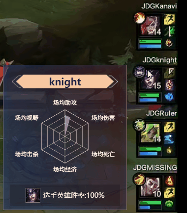
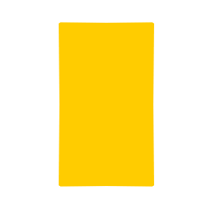
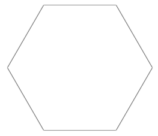
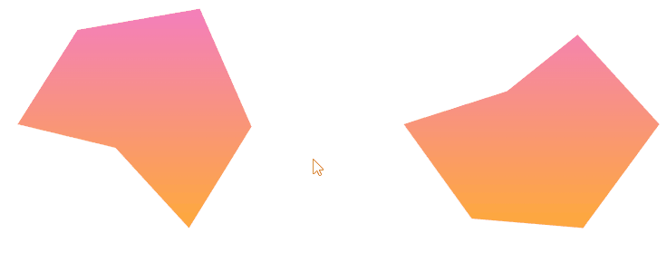

- 60 哪个 css 格式化工具是你的首选
- 59 CSS 选择器详解 12 个必知用法与最佳实践
- 58 动态视口单位之 dvh、svh、lvh
- 57 不规则造型按钮解决方案
- 56 不定宽文本溢出跑马灯效果完美解决方案
- 55 巧用 CSS 变量，实现动画函数复用
- 54 角向渐变的妙用
- 53 有趣的六芒星能力图动画
- 52 有意思的气泡 Loading 效果
- 51 CSS 原生支持的三角函数
- 50 有意思的网格下落加载效果
- 49 有意思的 Emoji 3D 表情切换效果
- 48 神奇的 3D 磨砂玻璃透视效果
- 47 抢先体验！超强大的 Anchor Positioning 锚点定位
- 46 CSS 也能实现碰撞检测
- 45 现代 CSS 解决方案 - 数学函数 Round
- 44 现代 CSS 解决方案 - 原生嵌套
- 43 神奇的背景，生化危机4日食 Loading 动画还原
- 42 当路径动画遇到滚动驱动
- 41 CSS 还原拉斯维加斯球数字动画
- 40 单标签下多色块随机文字随机颜色动画
- 39 CSS 也能实现 if 判断？实现动态高度下的不同样式展现
- 38 Flex 布局下居中溢出滚动截断问题
- 37 带圆角的虚线边框
- 36 现代 CSS 解决方案：文字颜色自动适配背景色
- 35 神奇的 3D 卡片反光闪烁动效
- 34 现代 CSS 解决方案：accent-color 强调色
- 33 巧用 has 和 drop-shadow 实现复杂布局效果
- 32 巧用 CSS + SVG 实现复杂线条光效动画
- 31 极具创意的鼠标交互动画
- 30 标准滚动条控制规范 scrollbar-color 和 scrollbar-width
- 29 类 ChatGpt 多行文本打字效果
- 28 神奇的卡片 Hover 效果与 Blur 的特性探究
- 27 渐变边框文字效果
- 26 巧妙使用多种方式实现单侧阴影
- 25 全尺寸的带圆角的渐变边框
- 24 开发中保证你用得到的 css 小技巧
- 23 您应该了解的 15 个有用的 CSS 属性
- 22 CSS 行元素的截断样式 box-decoration-break 属性
- 21 用 SASS 简化媒体查询
- 20 为什么你应该停止使用传统的 margin 和 padding 来设置 CSS 样式
- 19 sass 优化响应式布局代码
- 18 盘点 CSS 文本两端对齐的 N 种方式
- 17 如何修改滚动条的样式
- 16 CSS 模拟图片透明的棋盘背景
- 15 文本描边完美实现
- 14 你需要自定义 @property 而不是 CSS 变量的情况
- 13 从高度 0 过渡到自动高度
- 12 一些 css 语法解释
- 11 scss 日常用法
- 10 sass 指南
- 09 CSS 颜色设置透明度的新姿势
- 08 CSS 属性 appearance
- 07 CSS 动画性能优化
- 06 CSS 功能特性
- 05 CSS 中的 var() 函数
- 04 15 个你不知道的 CSS 属性
- 03 will-change
- 02 normalize.css 清除元素默认样式
- 01 纯 CSS 获取屏幕宽高
有趣的六芒星能力图动画
HaoTian · 2024-12-23 15:55:14
最近，在看 LPL 比赛的时候，看到这样一个有意思的六芒星能力图动画：
今天，我们就来使用纯 CSS 实现这样一个动画效果！
实现背景网格
对于如下这样一个背景网格，最好的方式当然肯定是切图。

如果一定要使用 CSS，勉强也能做，这就涉及了不规则图形边框效果，我们有一些方式可以实现，可以参考一下这几篇文章：
这里，我们可以使用 drop-shadow()，大致实现一下这个效果，核心步骤：
- 通过叠加实现一个六边形图形
- 利用
drop-shadow()实现边框效果
用动图演示一下，大概是这样：
代码如下：
<div></div>
div {
position: relative;
width: 150px;
height: 260px;
background: #fff;
filter: drop-shadow(0 0 0.5px #333) drop-shadow(0 0 0.5px #333) drop-shadow(0
0 0.5px #333);
&::before,
&::after {
content: "";
position: absolute;
inset: 0;
background: inherit;
}
&::before {
transform: rotate(60deg);
}
&::after {
transform: rotate(-60deg);
}
}
效果如下：
只需要多叠加几次，配合 3 条直线，整个背景就能很快的画出来，完整的代码，使用 SASS 表示如下：
<div class="g-container">
<ul class="g-bg">
<li></li>
<li></li>
<li></li>
<li></li>
<li></li>
</ul>
</div>
.g-container {
position: relative;
width: 300px;
height: 300px;
}
.g-bg {
position: absolute;
inset: 0;
&::after {
content: "";
position: absolute;
inset: 20px 0;
z-index: 6;
background: linear-gradient(
transparent,
transparent calc(50% - 0.5px),
#333 calc(50% - 0.5px),
#333 calc(50% + 0.5px),
transparent calc(50% + 0.5px),
transparent
), linear-gradient(
120deg,
transparent,
transparent calc(50% - 1px),
#333 calc(50% - 0.5px),
#333 calc(50% + 0.5px),
transparent calc(50% + 1px),
transparent
), linear-gradient(240deg, transparent, transparent calc(50% - 1px), #333
calc(50% - 0.5px), #333 calc(50% + 0.5px), transparent calc(50% + 1px), transparent);
clip-path: polygon(25% 0%, 75% 0%, 100% 50%, 75% 100%, 25% 100%, 0% 50%);
}
li {
--rotate: 0deg;
position: absolute;
width: 150px;
height: 260px;
translate: -50% -50%;
left: 50%;
top: 50%;
background: #fff;
filter: drop-shadow(0 0 0.5px #333) drop-shadow(0 0 0.5px #333) drop-shadow(0
0 0.5px #333);
&::before,
&::after {
content: "";
position: absolute;
inset: 0;
background: inherit;
}
&::before {
transform: rotate(60deg);
}
&::after {
transform: rotate(-60deg);
}
}
@for $i from 1 to 5 {
li:nth-child(#{$i}) {
z-index: #{$i};
width: #{(1 - $i / 5) * 150}px;
height: #{(1 - $i / 5) * 260}px;
}
}
}
背景网格就出来了：

实现六芒星样式
有了背景图，接下来，我们只需要实现六芒星效果图加上动画即可。
要实现这么一个图形其实非常简单，利用 clip-path 裁剪即可：

只需要两步：
- 实现一个渐变图形
- 利用
clip-path进行裁剪
核心代码：
<div></div>
···
div {
background: linear-gradient(rgba(241, 94, 174, 0.8), rgba(255, 152, 0, 0.8));
clip-path: polygon(25% 0%, 75% 0%, 100% 50%, 75% 100%, 25% 100%, 0% 50%);
}
当然，我们可以把坐标点当成参数，把坐标点计算好后，通过内联标签的 style 传递进 CSS 中，这样，就可以展示不同基于的六芒星的图案。
像是这样：
<div
style="--polygon: 30% 10%, 75% 1%, 94% 51%, 71% 94%, 44% 60%, 8% 50%"
></div>
<div
style="--polygon: 25% 0%, 75% 0%, 100% 50%, 75% 100%, 25% 100%, 0% 50%"
></div>
···
div {
background: linear-gradient(rgba(241, 94, 174, 0.8), rgba(255, 152, 0, 0.8));
clip-path: polygon(var(--polygon));
}
这样就能快速得到不同的图形：

借助 CSS @Property 实现动画 Hover 效果
最后一步，我们只需要实现 Hover 动画即可。
这里，我们需要借助 CSS @Property 实现。
关于 CSS @Property，还不太了解的同学，可以参考：CSS @property，让不可能变可能。
这里其实就是一个饼图动画，首先，我们来实现一个动态的饼图动画。
假设，我们有如下结构：
<div></div>
.normal {
width: 200px;
height: 200px;
border-radius: 50%;
background: conic-gradient(
yellowgreen,
yellowgreen 25%,
transparent 25%,
transparent 100%
);
transition: background 300ms;
&:hover {
background: conic-gradient(
yellowgreen,
yellowgreen 60%,
transparent 60.1%,
transparent 100%
);
}
}
将会得到这样一种效果，由于 conic-gradient 是不支持过渡动画的，得到的是一帧向另外一帧的直接变化：

好，使用 CSS @Property 自定义变量改造一下：
@property --per {
syntax: "<percentage>";
inherits: false;
initial-value: 25%;
}
div {
background: conic-gradient(
yellowgreen,
yellowgreen var(--per),
transparent var(--per),
transparent 100%
);
transition: --per 300ms linear;
&:hover {
--per: 60%;
}
}
看看改造后的效果，借助 CSS @Property 自定义变量，我们能够实现过往无法实现的过渡动画效果：

CodePode Demo -- conic-gradient 配合 CSS @property 实现饼图动画
在本 DEMO 中，我们会运用一样的技巧，只不过，我们会把 CSS @Property 自定义变量运用在 mask 上，通过 mask 的遮罩效果，实现 Hover 过程的展示动画。
关于 mask，还不太了解的同学，可以参考：奇妙的 CSS MASK。
核心代码如下：
<div
class="g-content"
style="--polygon: 43% 36%, 69% 12%, 99% 50%, 71% 94%, 30% 90%, 5% 50%"
></div>
@property --per {
syntax: "<percentage> | <angle>";
inherits: false;
initial-value: 360deg;
}
.g-content {
position: absolute;
inset: 20px 0;
z-index: 10;
mask: conic-gradient(
#000,
#000 var(--per),
transparent var(--per),
transparent 360deg
);
&:hover {
animation: hoverPie 600ms ease-in-out;
}
&::before {
content: "";
position: absolute;
inset: 0;
background: linear-gradient(
rgba(241, 94, 174, 0.8),
rgba(255, 152, 0, 0.8)
);
clip-path: polygon(var(--polygon));
}
}
@keyframes hoverPie {
0% {
--per: 0deg;
}
100% {
--per: 360deg;
}
}
这里：
- 我们用元素的
&::before实现了我们上述说的六芒星样式图 - 利用元素本身的
mask配合一个 CSS @Property 属性实现遮罩动画
整体 Hover 上去的效果如下：
我们把上述所有的内容融合一下，就能得到完整的效果：

至此，我们就大致还原了整个效果，撒花！
完整的代码，你可以戳这里：CodePen Demo -- LPL Player Hexagram Ability Chart Animation